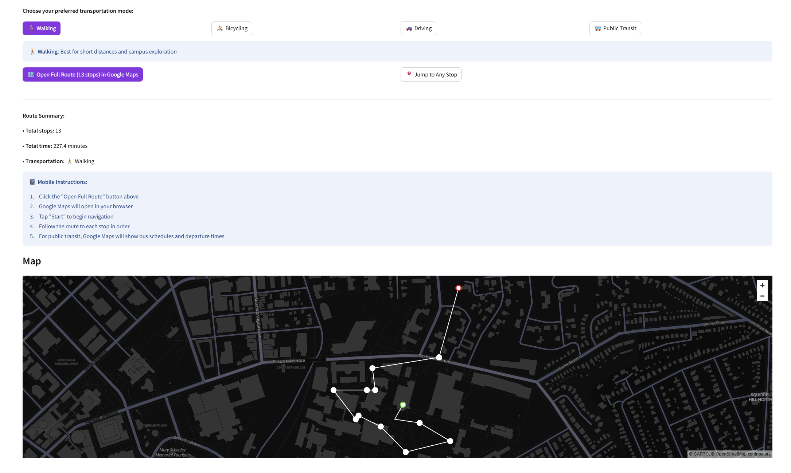
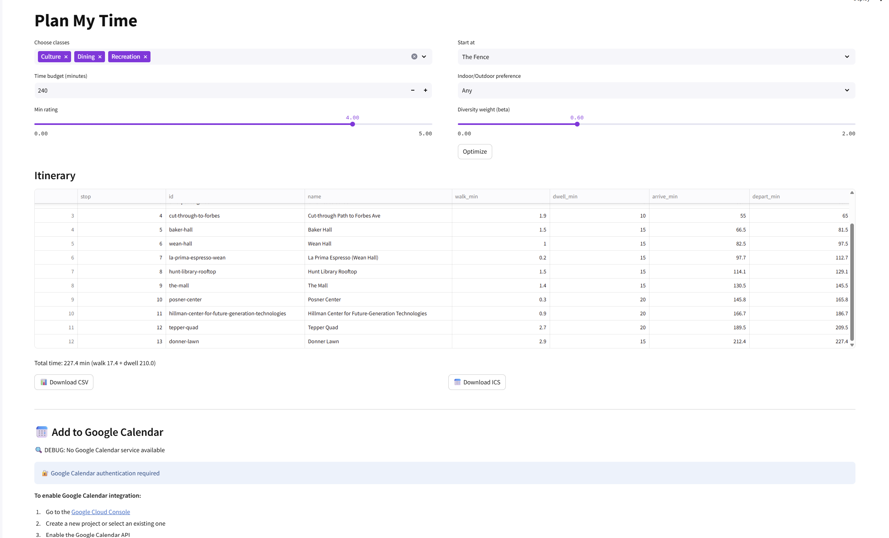
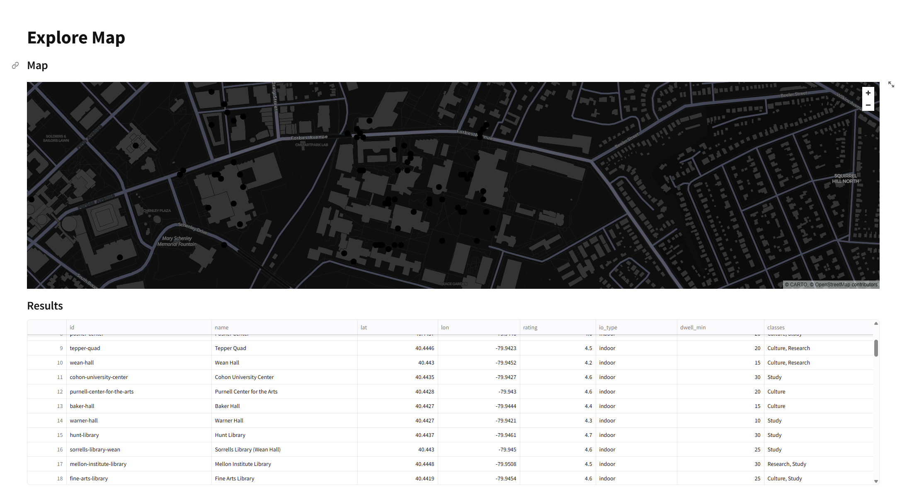

Tartan Explore - Campus Tour Optimization System
Project Screenshots
Campus Map and Landmark Selection
Route Optimization and Planning
Calendar Integration and Navigation
Project Overview
Tartan Explore is a comprehensive web application designed to enhance the campus exploration experience for new visitors and students at Carnegie Mellon University. The system provides intelligent tour planning and optimization for over 100 campus landmarks, helping users discover the best routes and itinerary options based on their personal preferences and time constraints.
Problem Statement
New visitors and students often struggle to efficiently explore Carnegie Mellon's vast campus, lacking knowledge of key landmarks, optimal routes, and time management for comprehensive tours. Traditional paper maps or basic navigation apps fail to provide personalized, optimized experiences that consider user interests, time constraints, and landmark characteristics.
Technical Implementation
1. Landmark Database and Categorization
- Curated database of 100+ campus landmarks with detailed information
- Intelligent categorization system (academic buildings, recreational facilities, dining locations, historical sites)
- User preference matching based on landmark categories and interests
2. Route Optimization Algorithm
- Advanced pathfinding algorithms to calculate optimal routes
- Distance and time optimization between selected landmarks
- Multi-criteria optimization considering user preferences, time constraints, and landmark importance
- Dynamic itinerary generation based on selected landmarks and available time
3. Google Maps Integration
- Seamless integration with Google Maps API for real-time navigation
- Interactive map visualization of campus landmarks and optimized routes
- Turn-by-turn navigation directions
- Live traffic updates and alternative route suggestions
4. Google Calendar Integration
- Automated scheduling based on calculated exploration times
- Time management for landmark visits
- Conflict detection with existing calendar events
- Reminder notifications for tour milestones
5. Time Calculation System
- Accurate travel time computation between landmarks
- Estimated exploration time for each landmark category
- Dynamic duration adjustment based on user pace preferences
- Buffer time integration for breaks and unforeseen delays
Key Features
- Smart Itinerary Planning: Automatic generation of optimized tour routes
- Personalized Recommendations: Custom suggestions based on user preferences
- Real-time Navigation: Live Google Maps integration with traffic updates
- Calendar Management: Schedule coordination and time management
- Multi-stop Optimization: Efficient routing for multiple landmark visits
- Mobile-responsive Design: Accessible on all devices
Technical Stack
- Frontend: HTML5, CSS3, JavaScript (ES6+), Responsive Design
- Backend: Node.js, Express.js for API development
- Database: MongoDB for landmark data and user preferences
- APIs: Google Maps API, Google Calendar API
- Optimization: Custom algorithms for route planning and time calculation
- Deployment: Web hosting platform with domain configuration
User Experience Flow
- Interest Selection: Users choose categories of landmarks they want to explore
- Preference Input: Time constraints, walking pace, and specific landmarks
- Optimization: System calculates best route covering selected landmarks
- Itinerary Generation: Complete tour plan with timing and navigation details
- Integration: Automatic calendar scheduling and Google Maps navigation
- Real-time Updates: Live navigation and time adjustments during tour
Results and Impact
- Significant improvement in campus exploration efficiency for new visitors
- Personalized tour experiences tailored to individual interests
- Optimized time management reducing wasted time and missed opportunities
- Enhanced accessibility through comprehensive landmark documentation
- Seamless integration of planning and execution phases
System Architecture
The application follows a modular architecture with clear separation of concerns:
- User Interface Layer: Responsive web interface for user interaction
- Application Logic Layer: Route optimization algorithms and business logic
- Data Management Layer: Landmark database and user preference storage
- Integration Layer: External API connections (Google Maps, Calendar)
- Performance Layer: Caching and optimization for real-time responses
Future Enhancements
- Integration with university events and activities
- Gamification elements for enhanced engagement
- Social features for group tour planning
- Augmented reality landmark identification
- Analytics dashboard for usage patterns and optimization
Skills Demonstrated
- Full-stack web development and architecture design
- API integration with Google services
- Algorithm development for optimization problems
- User experience design and mobile responsiveness
- Database design and data management
- Project management and deployment
Conclusion
Tartan Explore demonstrates my ability to create practical, user-focused solutions that address real-world problems. The project combines technical expertise in web development, algorithmic optimization, and API integration to deliver a comprehensive campus navigation system. This initiative showcases my skills in full-stack development, user experience design, and systematic problem-solving while providing genuine value to the Carnegie Mellon community.
The successful implementation of route optimization algorithms, seamless third-party integrations, and intuitive user interface highlights my proficiency in creating scalable web applications that solve complex logistical challenges while maintaining excellent user experience.